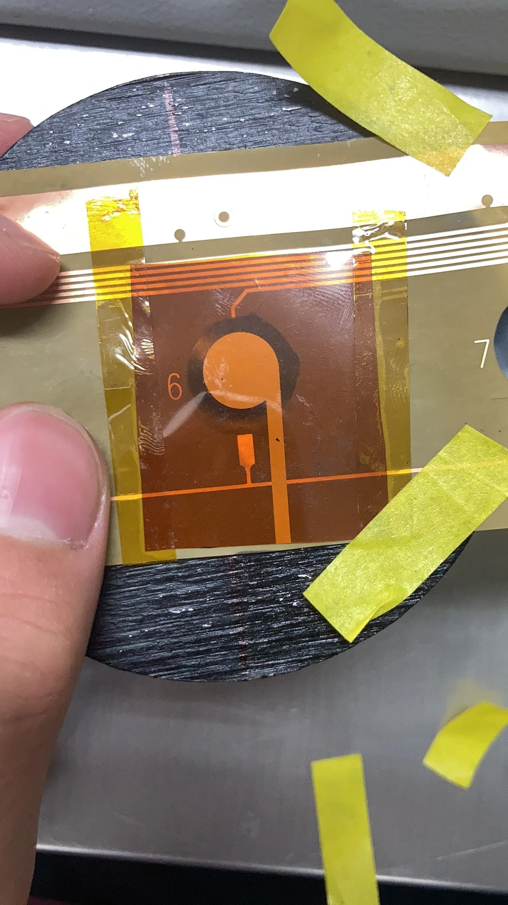
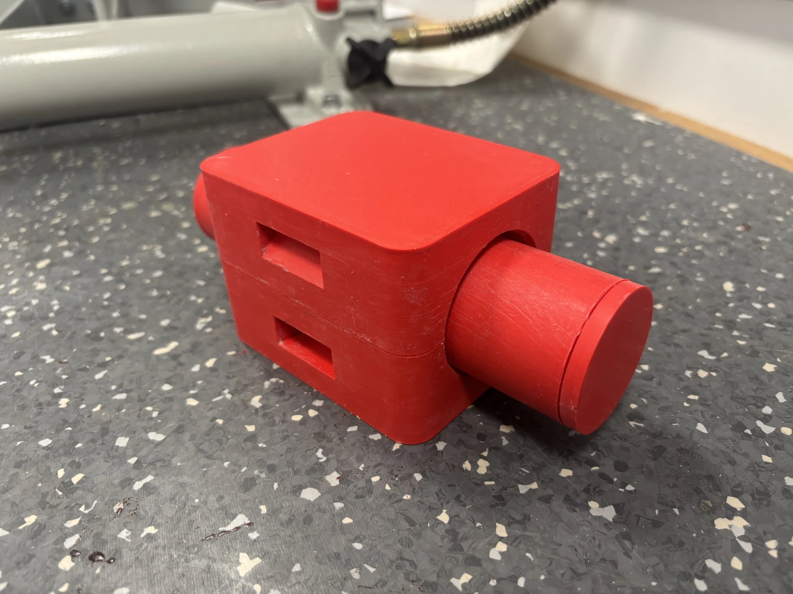
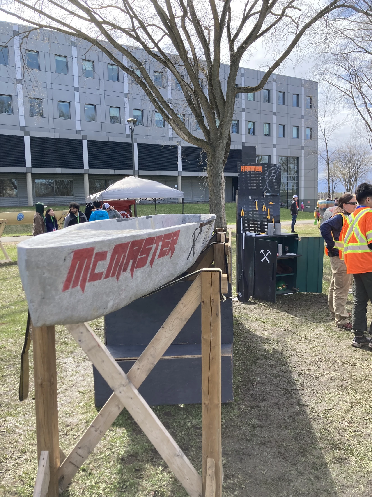
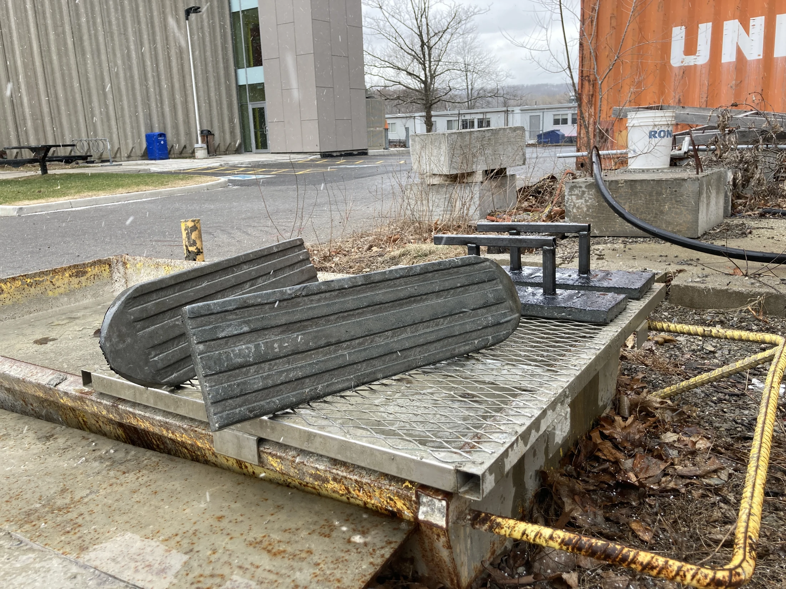
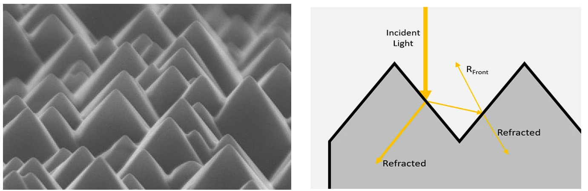
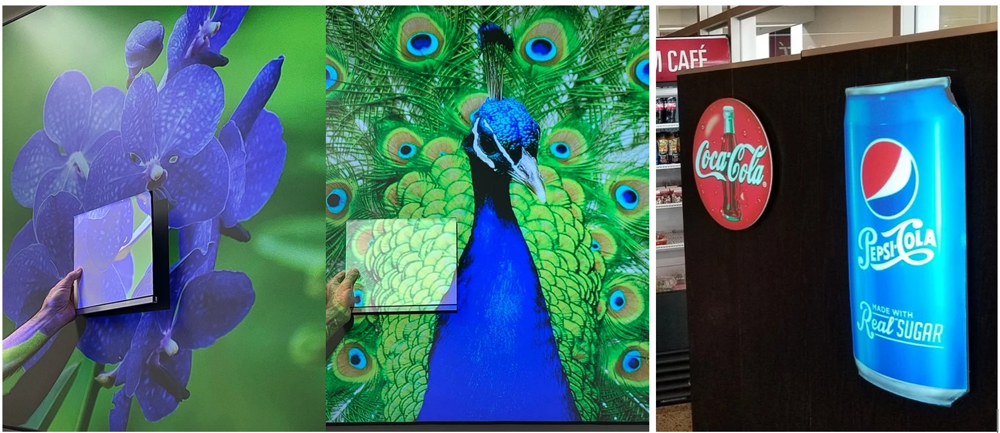

High Temperature Flexible Pressure Sensor
Prototype development, process consistency and reliability testing for demanding environments.
Engineering project portfolio
Selected projects in practical engineering, manufacturing and experimental research.

Prototype development, process consistency and reliability testing for demanding environments.

Supporting SolidWorks mould design and composite fabrication ahead of cryogenic bonded-joint research.

Fourteen mix trials and a reinforced 18 mm hull for McMaster's first national competition entry.

A reinforced concrete ski system designed, tested and built for a student toboggan team.

A rapid optical method for estimating how effectively a solar cell keeps light inside silicon.

Identifying a two-layer optical film and testing how hot-roll processing changed its performance.